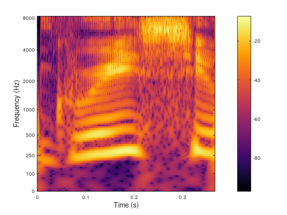
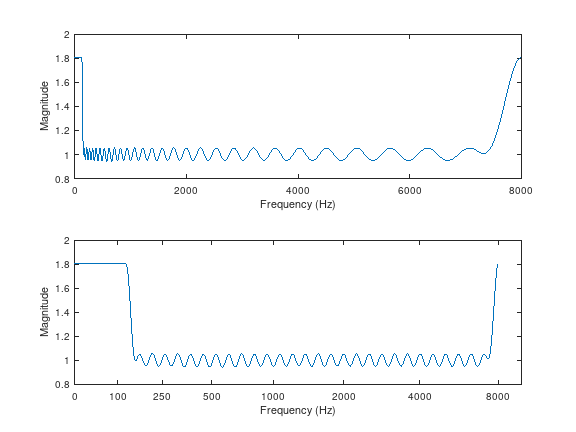
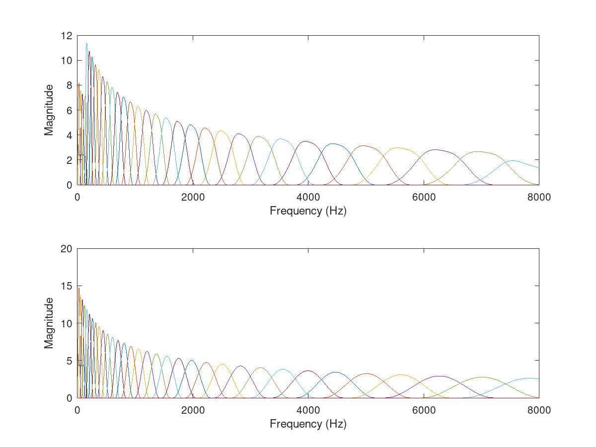

[g,a,fc,L]=audfilters(fs,Ls); [g,a,fc,L]=audfilters(fs,Ls,...);
| fs | Sampling rate (in Hz). |
| Ls | Signal length. |
| g | Cell array of filters. |
| a | Downsampling rate for each channel. |
| fc | Center frequency of each channel. |
| L | Next admissible length suitable for the generated filters. |
[g,a,fc,L]=audfilters(fs,Ls) constructs a set of filters g that are equidistantly spaced on a perceptual frequency scale (see freqtoaud) between 0 and the Nyquist frequency and with bandwidths that are proportional to the critical bandwidth of the auditory filters audfiltbw. The filters are intended to work with signals with a sampling rate of fs. The signal length Ls is mandatory, since we need to avoid too narrow frequency windows.
By default the ERB scale is chosen but other frequency scales are possible. See 'freqtoaud' for all available options. The most scales are 'erb', 'bark', and 'mel'.
By default, a Hann window on the frequency side is chosen, but the window can be changed by passing any of the window types from firwin as an optional parameter. Run getfield(getfield(arg_firwin,'flags'),'wintype') to get a cell array of window types available.
The integer downsampling rates of the channels must all divide the signal length, filterbank will only work for input signal lengths being multiples of the least common multiple of the downsampling rates. See the help of filterbanklength. The fractional downsampling rates restrict the filterbank to a single length L=Ls.
[g,a,fc,L]=audfilters(fs,Ls,flow,figh) constructs a set of filters that are equidistantly spaced between flow and fhigh. In that case two additional filters will be positioned at the 0 and Nyquist frequencies so as to cover the full spectrum. The values of flow and fhigh can be instead specified using a key/value pair as:
[g,a,fc,L]=audfilters(fs,Ls,...,'flow',flow,'fhigh',figh)
[g,a,fc,L]=audfilters(...,'regsampling') constructs a non-uniform filterbank with integer subsampling factors.
[g,a,fc,L]=audfilters(...,'uniform') constructs a uniform filterbank where the integer downsampling rate is the same for all the channels. This results in most redundant representation which produces nice plots.
[g,a,fc,L]=audfilters(...,'fractional') constructs a filterbank with fractional downsampling rates a. This results in the least redundant system.
[g,a,fc,L]=audfilters(...,'fractionaluniform') constructs a filterbank with fractional downsampling rates a, which are uniform for all filters except the "filling" low-pass and high-pass filters can have different fractional downsampling rates. This is usefull when uniform subsampling and low redundancy at the same time are desirable.
audfilters accepts the following optional parameters:
| 'spacing',b | Specify the spacing in Ecritical bandwidth (ERB or Bark depending on the scale) between the filters. Default value is b=1. |
| 'M',M | Specify the total number of filters between 'flow' and 'fhigh', M. If this parameter is specified, it overwrites the 'spacing' parameter. |
| 'redmul',redmul | Redundancy multiplier. Increasing the value of this will make the system more redundant by lowering the channel downsampling rates. It is only used if the filterbank is a non-uniform filterbank. Default value is 1. If the value is less than one, the system may no longer be painless. |
| 'symmetric' | Create filters that are symmetric around their centre frequency. This is the default.'sqrtsquare','sqrtrect' |
| 'warped' | Create asymmetric filters that are asymmetric on the ERB scale. The warping does not work with other scales yet. |
| 'complex' | Construct a filterbank that covers the entire frequency range. |
| 'bwmul',bwmul | Bandwidth of the filters relative to the bandwidth returned by audfiltbw. Default is \(bwmul=1\). |
| 'min_win',min_win | Minimum admissible window length (in samples). Default is 4. This restrict the windows not to become too narrow when L is low. |
In the first example, we construct a highly redudant uniform filterbank on the ERB scale and visualize the result:
[f,fs]=greasy; % Get the test signal [g,a,fc,L]=audfilters(fs,length(f),'uniform','M',100); c=filterbank(f,g,a); plotfilterbank(c,a,fc,fs,90,'audtick');
In the second example, we construct a non-uniform filterbank with fractional sampling that works for this particular signal length, and test the reconstruction. The plot displays the response of the filterbank to verify that the filters are well-behaved both on a normal and an ERB-scale. The second plot shows frequency responses of filters used for analysis (top) and synthesis (bottom).
[f,fs]=greasy; % Get the test signal
L=length(f);
[g,a,fc,L]=audfilters(fs,L,'fractional');
c=filterbank(f,{'realdual',g},a);
r=2*real(ifilterbank(c,g,a));
norm(f-r)
% Plot the response
figure(1);
subplot(2,1,1);
R=filterbankresponse(g,a,L,fs,'real','plot');
subplot(2,1,2);
semiaudplot(linspace(0,fs/2,L/2+1),R(1:L/2+1));
ylabel('Magnitude');
% Plot frequency responses of individual filters
gd=filterbankrealdual(g,a,L);
figure(2);
subplot(2,1,1);
filterbankfreqz(gd,a,L,fs,'plot','linabs','posfreq');
subplot(2,1,2);
filterbankfreqz(g,a,L,fs,'plot','linabs','posfreq');
This code produces the following output:
ans =
8.470876921240907e-15


T. Necciari, P. Balazs, N. Holighaus, and P. L. Søndergaard. The ERBlet transform: An auditory-based time-frequency representation with perfect reconstruction. In Proceedings of the 38th International Conference on Acoustics, Speech, and Signal Processing (ICASSP 2013), pages 498-502, Vancouver, Canada, May 2013. IEEE.